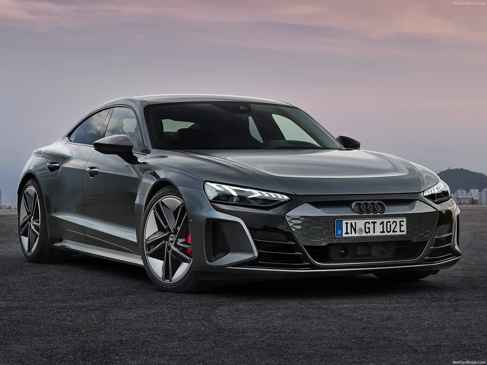
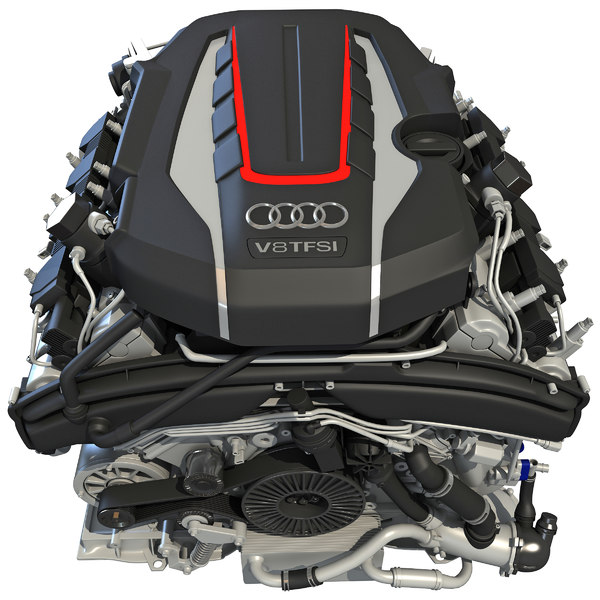
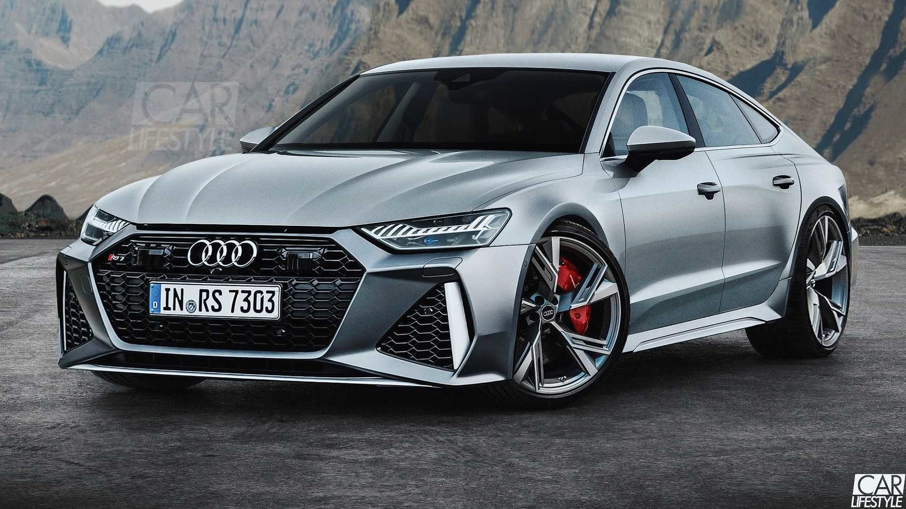

THE INTTERIOR DESIGN; may be the most distinctive in the new generation of the A8, as Audi has taken care of providing new luxurious materials and very high technologies,
even the air conditioning vents are opened and closed electronically. One of the most powerful entertainment systems in the car market today, through the screen,
you will control from the audio system and navigation maps to the car’s settings, driving and safety,
EXTERIOR DESIGN;
It gets the new Audi identity with its sharp and straight lines, wide and wide grille, sharp Matrix LED headlights and adaptive laser lighting linked to the navigation system so that it turns before
reaching a bend based on map data./On the side, Audi has maintained the same design ethos The previous generation, with an increase in the rear corner extension of the side glass, and the addition of new,
sharper lines at the bottom as well as above the rear wheel arches.
Audi comes with two engines, the first 6-cylinder with a capacity of 3000 cc, generating 340 horsepower and 500 Nm of torque, while the second 8-cylinder engine with a capacity of 4000 cc generates 460 horsepower and 660 Nm of torque, all equipped with an 8-speed transmission.
Audi is one of the most refined luxury small sedans, with vibrant engines, comfortable ride quality, and high-quality interior design; The interior looks great, includes lots of high-quality materials, has two rows of spacious seats, and easy-to-use technology features.
